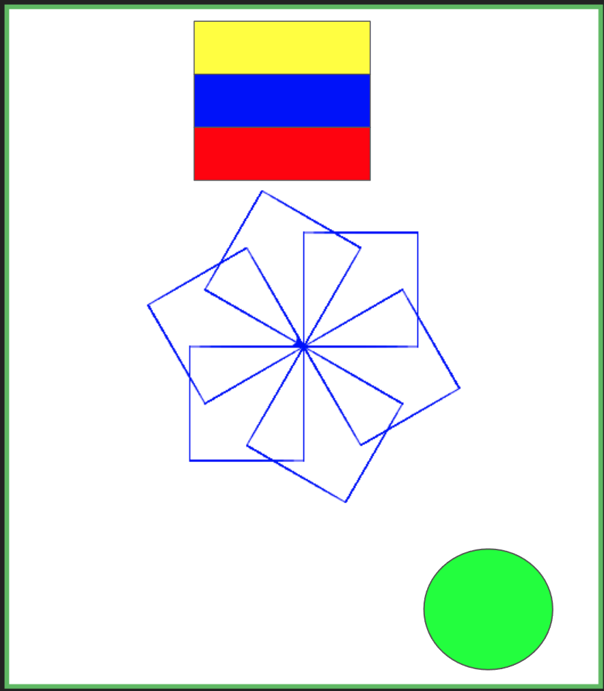

EXAMEN IMPAR
En la sanbox LINK se debe hacer el siguiente ejercicio:

Recuerde que cada parte del dibujo es un punto de esta manera:
-
El diseño central basado en cuadros equivale a 6 puntos
-
el diseño de la bandera equivale a un punto
-
el coloreado completo de la bandera equivale a un punto
-
el círculo equivale a un punto
-
el coloreado del círculo equivale a un punto
recuerde que puede hacerlos en cualquier orden.
TIP
https://pythonsandbox.com/docs/turtle
en esta pagina esta la documentancion necesaria para realizar los ejercicios
para rellenar
turtle.color("black", "red")
turtle.begin_fill()
#aqui va el codigo de lo que va a pintar
turtle.end_fill()